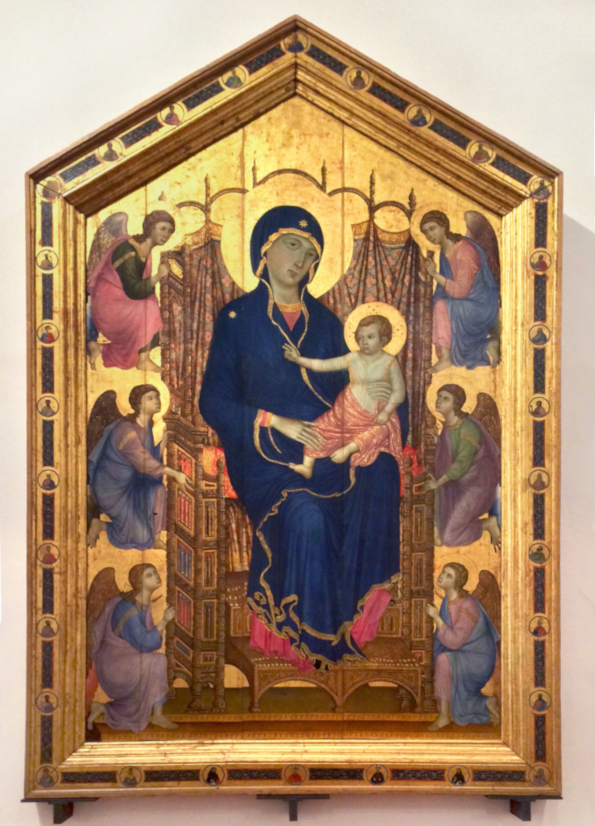

Oração a Jesus
[66] Meu amável Jesus, permite-me dirigir a vós para testemunhar o reconhecimento de onde me encontro pela graça que me concedeste ao dar-me vossa Santa Mãe por meio da devoção da escravidão, para ser minha advogada junto a Vossa Majestade, e o suplemento universal em minha tão grande miséria. Ai de mim, Senhor! Sou tão miserável que, sem esta boa Mãe, eu estaria infalivelmente perdido. Sim. Maria é-me necessária junto a Vós, em toda parte: necessária para acalma-vos em vossa justa cólera, pois tanto vos ofendi a cada dia; necessária para deter os castigos eternos de vossa justiça que eu mereço; necessária para eu olhar para Vós, para vos falar, para vos rogar, para aproximar-me de vós e vos agradar; necessária para salvar minha alma e a dos outros; necessária, em uma palavra, para fazer sempre vossa santa vontade e buscar em tudo a vossa maior glória.
Ah, que eu possa publicar por todo o universo a misericórdia que tiveste para comigo! Que o mundo todo saiba que, sem Maria, eu já estaria condenado! Que eu possa render dignas ações de graça por tão grande benefício! Maria está em mim, haec facta est mihi. Ó, que tesouro! Ó, que consolação! Como não ser, por isso mesmo, inteiramente dela! Ó, que ingratidão [seria], meu querido Salvador! Prefiro antes morrer a incorrer em tal desgraça, pois prefiro a morte a viver sem pertencer inteiramente a Maria.
Eu a tomei milhares de vezes como todo bem para mim, com São João Evangelista aos pés da cruz, e tantas vezes igualmente dei-me a ela; mas, se ainda não o fiz suficientemente bem, segundo vossos desejos, querido Jesus, faço-o agora como quiserdes que eu faça; e se virdes em minha alma e em meu corpo alguma coisa que não pertença a essa augusta Princesa, peço-vos que a arranqueis e a lanceis longe de mim, pois não sendo de Maria, é indigna de vós.
[67] Ó Santo Espírito! Concedei-me todas essas graças e plantai, regai e cultivai em minha alma a amável Maria, que é a Árvore da vida verdadeira, para que cresça, floresça e dê frutos de vida em abundância. Ó Santo Espírito! Dai-me uma grande devoção e uma forte inclinação a vossa divina Esposa, um grande consolo em seu seio maternal e um constante recurso à sua misericórdia, para que nela formeis em mim Jesus Cristo natural, grande e poderoso, até a plenitude de sua idade perfeita. Amem.

O Segredo De Maria, Suplementos - Orações a Jesus e a Maria, 66-67